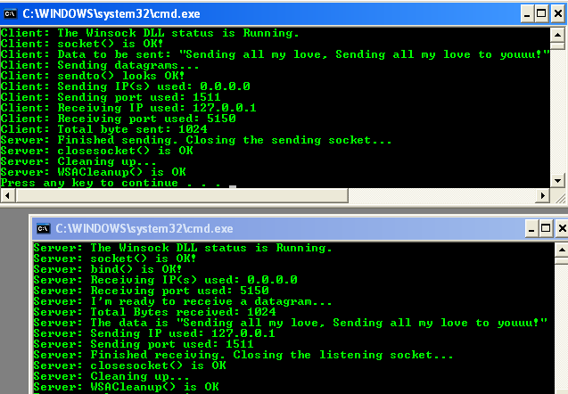
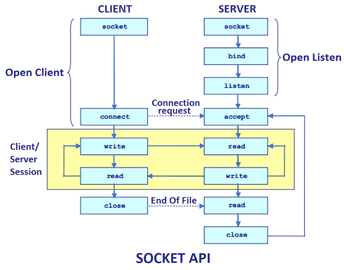

Programación de aplicaciones con sockets
Debido a su ubicuidad, la familia de protocolos TCP/IP se considera como un estándar de facto, sin embargo, no ocurre lo mismo con las interfaces de programación disponibles para desarrollar aplicaciones en red. En general, cada tipo de sistema operativo provee una API de comunicación TCP/IP. Tales interfaces presentan aspectos comunes derivados principalmente de la interfaz de comunicación de los sistemas operativos tipo Unix (Berkeley Sockets). Por ejemplo, Microsoft Windows incluye una interfaz de programación denominada Windows Sockets 2 basada en el paradigma popularizado por los Berkeley Sockets. Las diferencias en su arquitectura en relación con éstos últimos son reflejo del Modelo de Arquitectura de Sistema Abierto de Windows (WOSA, Windows Open System Architecture). Por su parte, Java también ofrece una interfaz de programación TCP/IP que incluye la orientación a objetos y portabilidad que le caracteriza.
 La interfaz, conocida como socket, fue tan ampliamente aceptada que se convirtió en un estándar de facto. El UNIX System V usa en su lugar el Transport Level Interface (TLI). No obstante, el uso de los sockets está tan extendido que es habitual que cualquier implementación de UNIX disponga de este interfaz por compatibilidad con el BSD.
Un socket en programación es un túnel de comunicación que ayuda a que 2 aplicaciones se comuniquen, los sockets son la base de internet y de sus protocolos como HTTP, FTP, SMTP, etc.
Una de las ideas iniciales en el diseño de los sockets era utilizar las funciones que suministra el sistema operativo Unix siempre que fuera posible y, añadir nuevas llamadas al sistema si era difícil encajar los requerimientos de la programación en red con las funciones existentes en el operativo.
Los sockets son la base de los protocolos de internet, pero también se pueden utilizar para otras cosas, por ejemplo, mediante sockets podemos hacer que dos aplicaciones se comuniquen entre sí, para ello:

- Servidor (el que escucha). El servidor siempre escucha por un puerto (por donde pasan los datos) lo que el cliente diga y si tiene respuesta, entonces responde.
- Cliente (el que habla). Normalmente el cliente se conecta al servidor por el puerto y le empieza a enviar peticiones y esperando respuestas.
- Por donde pasan los datos, realmente es por un puerto de entrada para el servidor y un puerto de salida para el cliente.
- El tema de conversación (protocolo), para que haya comunicación entre las 2 aplicaciones, estas deben estar programadas para responderse entre sí, lo cual se denomina protocolo.